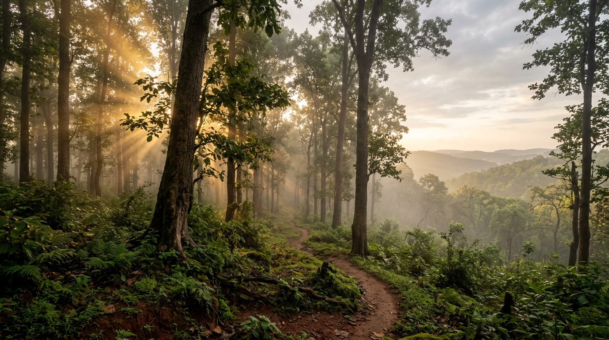
Stories of the forest & people.
DISOM is an independent cultural institution documenting and celebrating the vibrant, multifaceted Adivasi communities of Jharkhand. From sacred Sal groves to ancestral metallurgy and living songlines, discover living heritage with dignity and context.
A Living Home for Jharkhand’s Heritage
DISOM is not a static display of relics. It is an interactive digital archive dedicated to documenting ancestral wisdom, acknowledging distinct community languages, and safeguarding indigenous creative sovereignty.
Jharkhand—the "Land of Forests"—is home to over thirty distinct indigenous communities, each shaped by unique dialects, cosmologies, musical rhythms, and seasonal ceremonies. DISOM works collaboratively to record oral narratives, document material culture, and ensure that indigenous perspectives lead their own representation.
Pillars of Cultural Knowledge
Explore the six fundamental dimensions of indigenous knowledge across the Chotanagpur and Santhal Pargana plateaus.
People & Clan Lineages
Santhal, Munda, Oraon, Ho, Kharia, Birhor, Mahli, Bhumij, and more. Each community maintains sovereign social structures, clan totems (killi/gotra), and customary assemblies.
Land & Sacred Groves
The ancient red soils, laterite hills, and pristine Sarna groves (Jaherthan) where the spirits of ancestors and nature reside under ancient Sal (Shorea robusta) canopies.
Craft & Material Culture
From 4,000-year-old Dokra lost-wax bronze casting to delicate bamboo winnowing craft, hand-forged Hansuli torques, and unbleached cotton handlooms.
Languages & Scripts
Austroasiatic (Mundari, Santhali, Ho, Kharia) and Dravidian (Kurukh) linguistic treasures, alongside historic indigenous writing systems like Ol Chiki and Warang Chiti.
Music, Dance & Acoustic Rhythm
The thunder of Terracotta Mandars, resonance of brass Nagadas, melodic bamboo flutes (Rutu), and communal synchronized circular dance steps honoring seasonal rebirth.
Festivals & Ecological Calendars
Sarhul (the festival of Sal blossoms), Karam (reverence for the sacred tree of life), Sohrai (harvest thanksgiving to cattle), and Mage Parab honoring communal renewal.

Ancient Roots in High Plateaus
The history of Jharkhand’s indigenous peoples is etched in both the soil and unwritten songs transmitted across countless generations.
Megalithic burial stones (Sasandiri), prehistoric rock shelters at Isko, and metallurgical slag mounds throughout the Subarnarekha river basin demonstrate that Jharkhand has been continuously inhabited and stewarded by sophisticated agrarian and metallurgical communities for millennia.
"We did not inherit the forest from our ancestors; we hold it in trust for those yet unborn."
DISOM honors these oral memories alongside archaeological evidence, presenting history not through imperial conquest but through community stewardship.
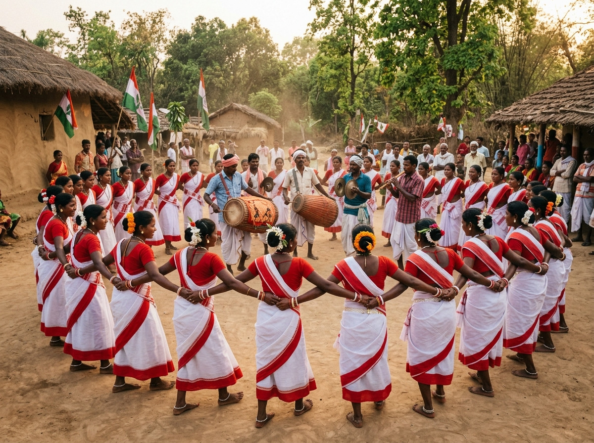
Living Heritage, Not Frozen Relics
Indigenous heritage in Jharkhand is not locked in colonial glass vitrines. It is lived, danced, woven, and spoken every single day.
In every village akhra (communal dance ground), young and old gather under open skies when the seasonal drums sound. The Parha and Manki-Munda traditional village governance systems continue to arbitrate community harmony and environmental custody.
DISOM works to ensure this living pulse is documented with total respect, celebrating contemporary innovators, community elders, and youth language revitalizers.
The Forest as Guardian and Nourisher
For Jharkhand's Adivasis, the forest (Disom) is not mere 'timber' or 'resource'. It is a living relative that provides food, medicine, fibre, and shade.
Seasonal gathering of Mahua blossoms, Sal seeds, wild mushrooms (Rugi), honey, and Chop creepers operates under strict customary taboos that prevent over-exploitation. Traditional terraced rice cultivation (Don and Tanr lands) captures monsoon runoff using gravitational channels engineered across centuries.
By documenting these sustainable agro-ecological models, DISOM highlights indigenous climate resilience as vital knowledge for our shared global future.
Change, Adaptability & Modern Identity
Adivasi youth and leaders navigate contemporary universities, digital technology, and national discourse while anchoring deeply in ancestral identity.
Digital Script Revitalization
From Unicode standardization of Ol Chiki (Santhali) and Warang Chiti (Ho) to Kurukh keyboard apps, young linguists are bringing indigenous scripts into the digital century.
Artisan Cooperatives & Fair Trade
Weaving self-help groups in Khunti, Hazaribagh, and Ghatshila are breaking exploitative middleman cycles, taking direct ownership of design, marketing, and ethical pricing.
Indigenous Legal Sovereignty
Scholars and activists assert constitutional rights under the 5th Schedule and the Chota Nagpur Tenancy (CNT) Act, defending customary land tenure against displacement.
Expressions of Earth and Spirit
Glimpse the rich spectrum of decorative murals, metallurgy, instruments, and ceremonial adornments.
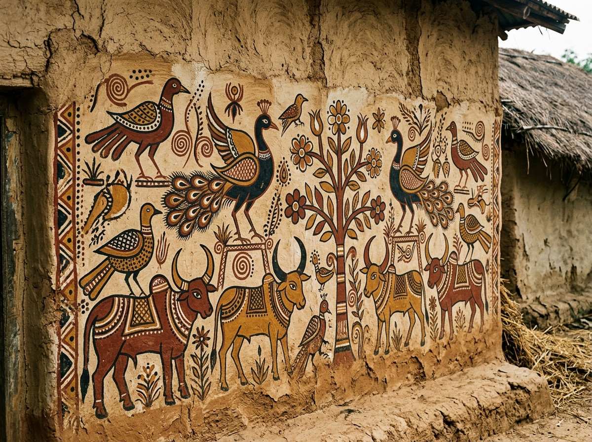
Sohrai & Khovar Murals
Natural earth clay paintings created on mud home walls during the post-monsoon harvest feast.
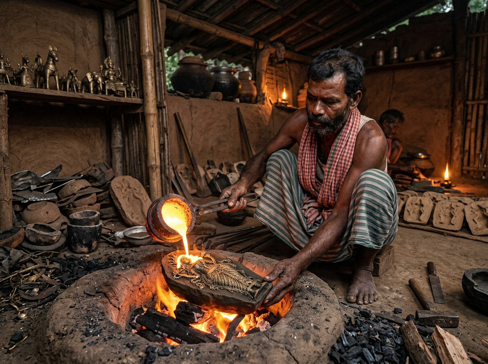
Dokra Lost-Wax Bronze
4,000-year-old metallurgical tradition casting intricate figurines from beeswax spirals and bell metal.
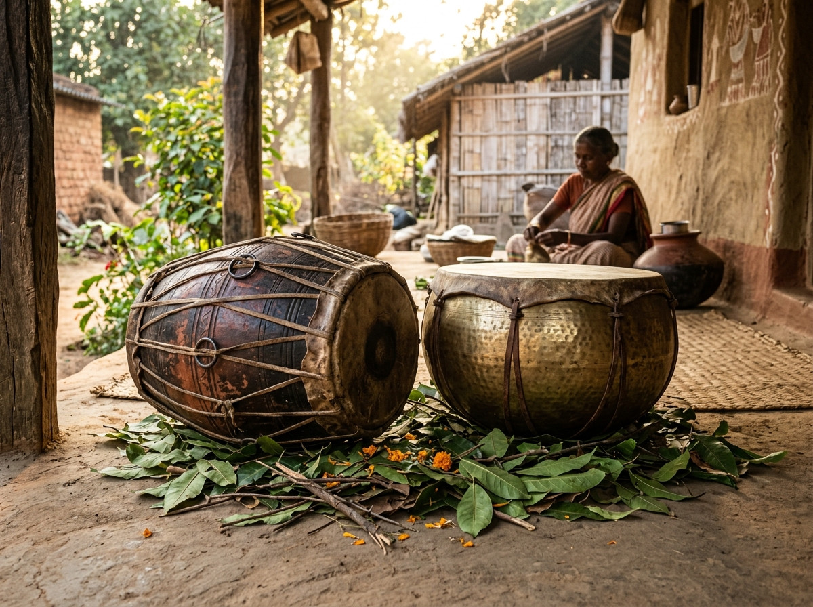
Terracotta Mandar Drum
Double-headed ceramic drum tuned with riverbed clay and iron slag.
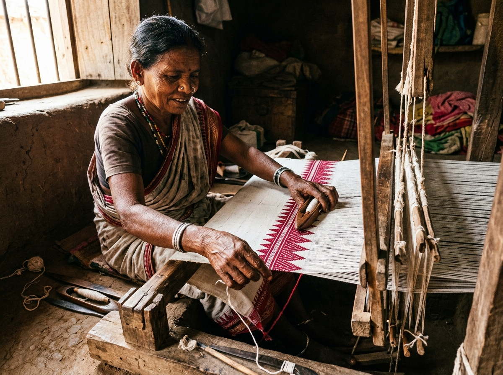
Lal-Paad Handloom Weave
Iconic red temple-border sarees woven on traditional pit looms.
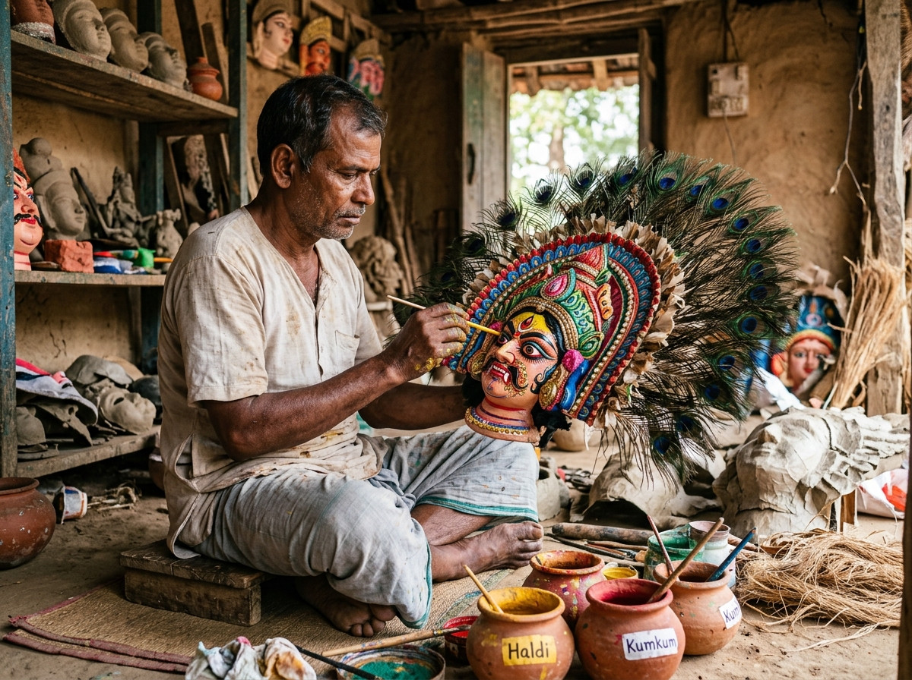
Seraikela Chhau Masks
Expressive masks crafted from local clay, fine muslin, and natural pigments.
From Memory to Modern Life
Tracing the resilient path of Jharkhand’s indigenous communities across eras of autonomy, resistance, and renewal.
Sovereign Forest Stewardship
Megalithic Sasandiri stones demarcate clan boundaries. Communal hunting rules, sacred grove worship, and indigenous copper-bronze smelting thrive on the plateau.
Eras of Resistance & The Hul
Led by leaders like Tilka Manjhi, Sidho-Kanho Murmu (Santhal Hul, 1855), and Birsa Munda (Ulgulan, 1899-1900), communities defend autonomy and forest rights against colonial landlords.
Script Innovation & Cultural Renaissance
Pandit Raghunath Murmu invents the Ol Chiki script for Santhali in 1925; Lako Bodra codifies Warang Chiti for the Ho language; Jaipal Singh Munda champions tribal self-determination.
Digital Sovereignty & Ethical Commerce
DISOM brings curated digital archives to global audiences while supporting direct artisan economic equity and community-led documentation.
Diverse Voices, Not a Single Monolith
There is no universal "tribal culture". Jharkhand's indigenous peoples belong to distinct language families, social orders, and spiritual traditions.
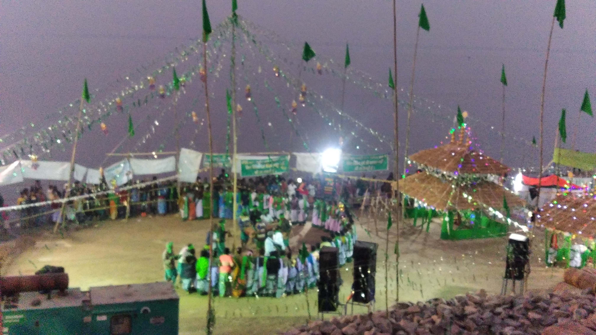
AustroasiaticSanthal / Santal
Renowned for their democratic Manjhi-Paraganit governance, musical poetry, distinct Ol Chiki script, and the festive Baha (Sal flower) celebration.
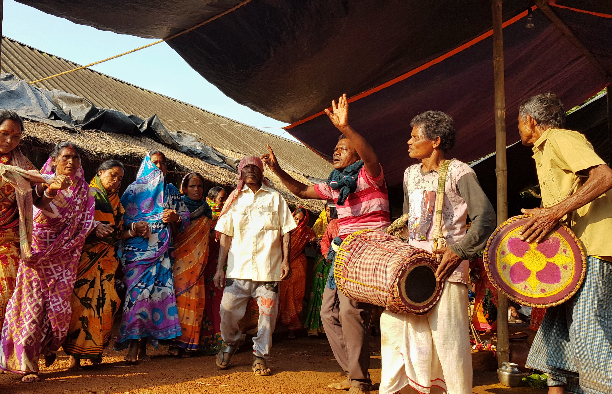
AustroasiaticMunda
Custodians of ancient megalithic Sasandiri traditions, the Munda maintain deep spiritual bonds with Singbonga and the reverence of the sacred Karam tree.
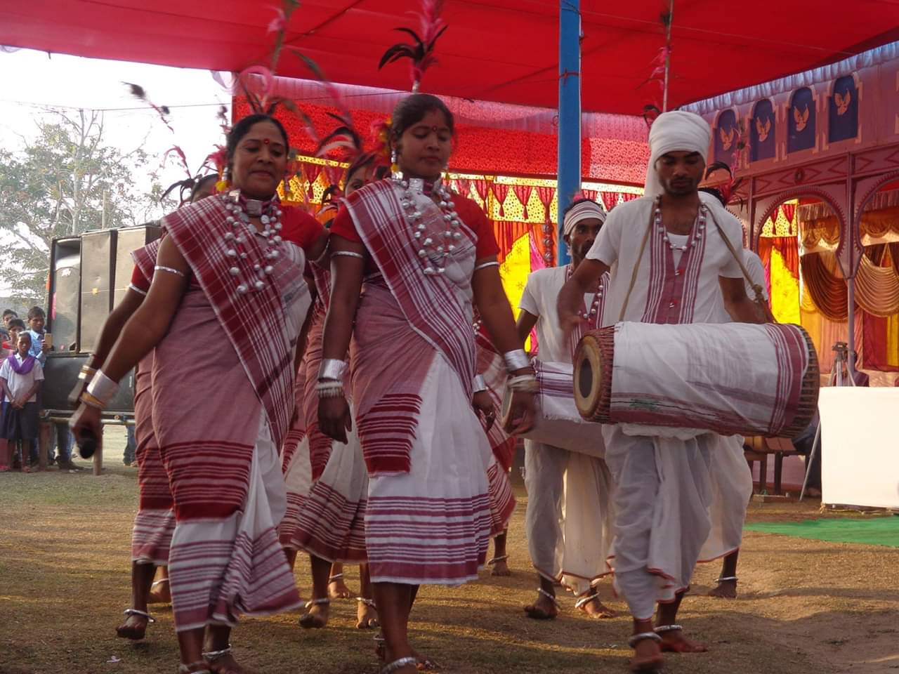
DravidianOraon / Kurukh
Speakers of the Kurukh tongue, renowned for their historical youth dormitory institution (Dhumkuria) and the grand spring festival of Sarhul.
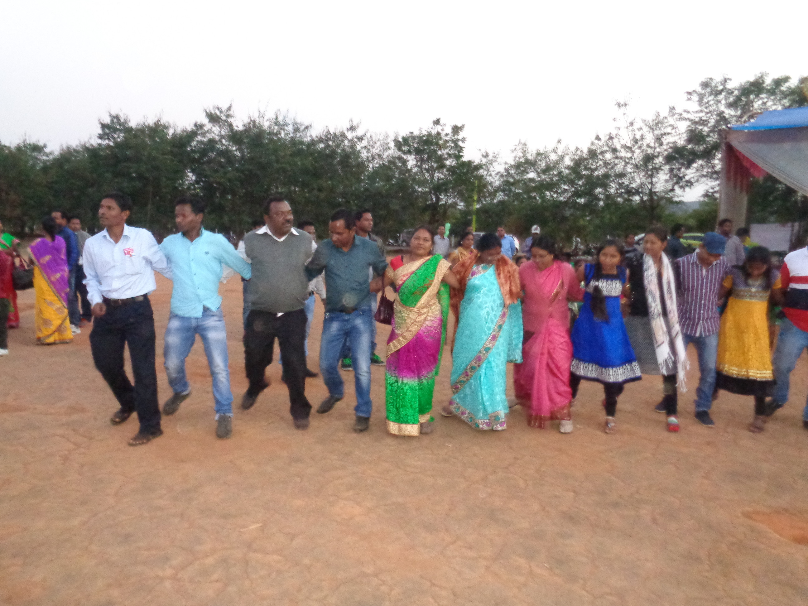
AustroasiaticHo
Inhabiting the dense Sal forests of Kolhan, the Ho have preserved the Manki-Munda traditional leadership system and celebrate the Mage Parab harvest feast.
Tribal Handicrafts With Real Context
Every creation holds a story, an artisan’s name, and generations of localized material knowledge.
DISOM Marketplace is built on non-exploitative, direct fair-trade principles. When you support an artisan on DISOM, you receive authentic handcrafted pieces—accompanied by maker credits, material transparency, and community provenance.
*All 29 catalog offerings are displayed as prototype educational entries with verification guidelines before production commercial transactions.
Explore Marketplace Catalog
Learning and responsible commerce, together.
DISOM bridges the digital divide by pairing educational museum documentation with direct artisan economic empowerment. We invite researchers, cultural custodians, and supporters to join this growing archive.